H2S · One-piece hull and cover
21 plates · Print 1–17, then choose 18 Jetson or 19 Pi, and 20 Gemini or 21 RealSense.
Download H2S 3MFPrint the parts you need and order the components. When you’re ready to build, take it one step at a time and follow the instructions.
20 assembly cards. Quantities are for one rover unless a step explicitly says “per wheel”. Computer and camera options are alternatives.
SP01–SP12 and LK05/LK06/LK08: dimensions and matching STLs · Reference sheet · Spacer locations

| Prepare | Qty |
|---|---|
| One-piece hull · PETG | 1 |
| Lidar Base R84 · PETG | 1 |
| Rear hull — motors and computer · PETG | 1 |
| Front hull — battery and camera · PETG | 1 |
| Epoxy from the two-part kit, for the hull joint | As needed |
| M3 heat-set insert, OD4 mm, length 6 mm | 11 |
| Split hull only: M4 × 15 socket-head screw | 6 |
| Split hull only: M4 hex nut, 7 mm across flats | 6 |
| Split hull only: M4 washer, Ø9 × 0.8 mm | 6 |
Fastening
| Prepare | Qty |
|---|---|
| Road wheel inner half · PETG | 6 |
| Road wheel outer half · PETG | 6 |
| SP09 · Road wheel centre spacer · PETG | 6 |
| 625 bearing | 12 |
| M3 × 35 socket-head screw | 18 |
| M3 hex nut | 18 |
| Prepare | Qty |
|---|---|
| Left HEX12 drive wheel inner half R13 · PETG | 1 |
| Left HEX12 drive wheel outer half R13 · PETG | 1 |
| Right HEX12 drive wheel inner half R13 · PETG | 1 |
| Right HEX12 drive wheel outer half R13 · PETG | 1 |
| HEX12 metal hub, 6 mm bore, 18 mm length | 2 |
| M3 × 20 socket-head screw | 6 |
| M3 hex nut | 6 |
| Prepare | Qty |
|---|---|
| Left 22T idler wheel inner half R13 · PETG | 1 |
| Left 22T idler wheel outer half R13 · PETG | 1 |
| Right 22T idler wheel inner half R13 · PETG | 1 |
| Right 22T idler wheel outer half R13 · PETG | 1 |
| SP10 · Idler centre spacer · PETG | 2 |
| 608 bearing | 4 |
| M3 × 25 socket-head screw | 6 |
| M3 hex nut | 6 |
| Prepare | Qty |
|---|---|
| Motor Mount Left R90 · PETG | 1 |
| Motor Mount Right R90 · PETG | 1 |
| Motor bearing inner retainer · PETG | 2 |
| JGB37-520 motor, 12 V, 90:1, 110 rpm, Hall encoder | 2 |
| 626 bearing, inner | 2 |
| Rigid coupling, 6 mm to6 mm | 2 |
| M4 × 20 socket-head screw | 8 |
| M4 hex nut | 8 |
| M3 × 8 socket-head screw | 12 |
| Prepare | Qty |
|---|---|
| Left inner track frame R12 C2 · PETG | 1 |
| Right inner track frame R12 C2 · PETG | 1 |
| M4 × 15 socket-head screw | 6 |
| M4 hex nut | 6 |
Exploded assembly
| Prepare | Qty |
|---|---|
| SP01 · Road wheel inner spacer · PETG | 6 |
| SP02 · Road wheel outer spacer · PETG | 6 |
| Smooth steel axle, 5 x70 mm finished length | 6 |
| LK05 — shaft collar: 5 mm bore, 10 mm outside diameter, 5 mm long | 12 |
Exploded assembly
| Prepare | Qty |
|---|---|
| SP03 · Drive motor side spacer · PETG | 2 |
| SP04 · Drive outer spacer · PETG | 2 |
| Motor bearing outer cover · PETG | 2 |
| SP11 · Drive bearing to collar spacer · PETG | 2 |
| Smooth steel axle, 6 x77 mm finished length | 2 |
| 626 bearing, outer | 2 |
| LK06 — shaft collar: 6 mm bore, 11 mm outside diameter, 5 mm long | 2 |
| M3 × 15 socket-head screw | 6 |
| M3 hex nut | 6 |
Exploded assembly
| Prepare | Qty |
|---|---|
| Left inner tensioner cover R12 C2 · PETG | 1 |
| Right inner tensioner cover R12 C2 · PETG | 1 |
| SP05 · Idler inner spacer · PETG | 2 |
| SP06 · Idler outer spacer · PETG | 2 |
| Left Cover tensioner outer · PETG | 1 |
| Right Cover tensioner outer · PETG | 1 |
| Tensioner slider · PETG | 4 |
| SP07 · Idler inner retainer spacer · PETG | 2 |
| SP08 · Idler outer retainer spacer · PETG | 2 |
| Smooth steel axle, 8 x87 mm finished length | 2 |
| LK08 — shaft collar: 8 mm bore, 16 mm outside diameter, 8 mm long | 4 |
| M3 × 15 socket-head screw | 16 |
| M3 hex nut | 16 |
| M4 × 35 socket-head screw | 4 |
| M4 hex nut | 8 |
| M4 washer | 4 |
Exploded assembly
| Prepare | Qty |
|---|---|
| Left Outer Track Frame R32 · PETG | 1 |
| Right Outer Track Frame R32 · PETG | 1 |
| SP12 · Track frame cross-member spacer · PETG | 4 |
| M4 × 60 socket-head screw | 4 |
| M4 hex nut | 4 |
| M4 washer | 4 |
| Prepare | Qty |
|---|---|
| Track · 70 teeth · TPU | 2 |
| Prepare | Qty |
|---|---|
| Cytron MDD10A Rev2 dual motor driver | 1 |
| Adafruit QT Py ESP32-S3, 5426 | 1 |
| Adafruit Terminal Block BFF, 6495 | 1 |
| Adafruit INA219 STEMMA QT, 904 | 1 |
| M3 × 6 socket-head screw | 4 |
| M2 × 6 screw, non-countersunk | 6 |
| M2 washer, 0.3 mm thick | 6 |
| Prepare | Qty |
|---|---|
| Speaker, 3 W, 4 ohm, 2-pin connector with 2 mm pitch | 1 |
| MAX98357A amplifier module | 1 |
| Splash-resistant acoustic membrane, fitted to the inner grille lip | 1 |
| M3 × 6 socket-head screw | 2 |
| M2 × 6 screw, non-countersunk | 2 |
| M2 washer, 0.5 mm thick | 2 |
| Prepare | Qty |
|---|---|
| Pi Adapter R87 · PETG | 1 |
| Jetson Adapter R87 · PETG | 1 |
| JT01 · Jetson retaining tab 1 · PETG | 1 |
| JT02 · Jetson retaining tab 2 · PETG | 1 |
| Waveshare Bus Servo Adapter A | 1 |
| Pi only: HAT mounting screws and spacers, supplied with the HAT | 1 kit |
| M3 × 6 socket-head screw | 2 |
| M3 × 8 socket-head screw | 2 |
| M3 washer, 0.5 mm thick | 4 |
| M2.5 × 8 screw, non-countersunk | 4 |
| M2.5 washer, 0.5 mm thick | 4 |
| Jetson only: M3 × 8 socket-head screw, no washer | 2 |
| Prepare | Qty |
|---|---|
| Gemini Window Adapter R89 · PETG | 1 |
| RealSense Insert R72 · PETG | 1 |
| Gemini Flush Insert R72 · PETG | 1 |
| RealSense D455 OR Orbbec Gemini 2 | 1 |
| RealSense only: M4 × 10 socket-head screw | 2 |
| Gemini only: M3 × 8 socket-head screw | 2 |
| Prepare | Qty |
|---|---|
| Lidar dovetail carriage R21 · PETG | 1 |
| SLAMTEC RPLIDAR C1 | 1 |
| M3 × 10 socket-head screw | 2 |
| M2.5 × 6 socket-head screw | 4 |
| M3 × 20 socket-head screw | 1 |
Exploded assembly
| Prepare | Qty |
|---|---|
| XT30 distribution base · PETG | 1 |
| XT30 distribution lid · PETG | 1 |
| XT30 insulating separator · PETG | 1 |
| 3010 fan, 12 V | 2 |
| 12-cell battery pack, 3S4P, with BMS, 110 × 67 × 35 mm | 1 |
| Power harness wire, fuse, switches and USB cables | 1 |
| DC male barrel plug, 5.5 × 2.5 mm, 9.5 mm barrel, centre positive — Jetson power | 1 |
| DC male barrel plug matching the input of the Pi 5 V power supply | 1 |
| DC male barrel plug, 5.5 × 2.1 mm — Waveshare Bus Servo Adapter A power | 1 |
| DC male barrel plug, 5.5 × 2.1 mm — battery extension to the panel socket | 1 |
| XT30 enclosure connectors: 1 input + 4 outputs, from the BOM connector pairs | 5 |
| M2.5 × 10 low-head screw, head diameter 5 mm maximum | 4 |
| Prepare | Qty |
|---|---|
| Arm Mounting Platform R22 · PLA | 1 |
| SO101 Base · PLA | 1 |
| SO101 Shoulder rotation · PLA | 1 |
| SO101 Base motor holder · PLA | 1 |
| SO101 Shoulder bracket cable clip · PLA | 1 |
| SO101 Upper arm cable clip · PLA | 1 |
| SO101 Forearm cable clip · PLA | 1 |
| SO101 Wrist cable clip · PLA | 1 |
| SO101 Wrist bracket · PLA | 1 |
| ST3215 12 V serial bus servo | 5 |
| M3 × 10 socket-head screw | 4 |
| M4 × 25 countersunk 90-degree screw | 4 |
| M4 hex nut | 4 |
| Kit screw: M2 × 6, original servo head | 20 |
| Kit screw: M3 × 6, original servo head | 37 |
| Prepare | Qty |
|---|---|
| NC90 Right side shield · PLA | 1 |
| NC90 Pinion · PLA | 1 |
| NC90 Cable guide · PLA | 1 |
| NC90 Right jaw extended rack · PLA | 1 |
| Gripper Camera Mount R30 · PLA | 1 |
| NC90 Left side shield · PLA | 1 |
| NC90 Base extended rails · PLA | 1 |
| NC90 Left jaw extended rack · PLA | 1 |
| CF35-12 gripper servo | 1 |
| Wrist USB camera for the R30 mount, 21 × 13.5 mm PCB hole pattern | 1 |
| Kit screw: M3 × 6 cross-head ISO7045 | 11 |
| Kit screw: #1-42 x3/16 inch typeAB | 6 |
| M2 × 6 screw, non-countersunk, for wrist camera PCB | 4 |
| M3 × 10 socket-head screw, for wrist camera bracket | 2 |
| M3 hex nut, for wrist camera bracket | 2 |

| Prepare | Qty |
|---|---|
| 02 Motor access hatch 10 screws · PETG | 1 |
| One-piece upper cover · PLA | 1 |
| 14 Bin 20x10x2 magnet pockets · PLA | 1 |
| Split cover · rear section · PLA | 1 |
| Split cover · LiDAR extension · PLA | 1 |
| Magnet, 20 x10 x2 mm | 4 |
| Small two-part epoxy adhesive kit, two tubes (resin + hardener), for the magnets and split cover | 1 kit |
| M3 × 10 countersunk 90-degree screw, head diameter 6.4 mm maximum | 10 |
| M3 × 10 countersunk 90-degree screw, head diameter 5.6 mm maximum | 4 |
21 plates · Print 1–17, then choose 18 Jetson or 19 Pi, and 20 Gemini or 21 RealSense.
Download H2S 3MF24 plates · Print 1–20, then choose 21 Jetson or 22 Pi, and 23 Gemini or 24 RealSense.
Download P1 / P2 3MFP1S · P1P · P2S
Open one project in Bambu Studio. All copies are already placed; choose your computer and camera plates. Both projects include the Jetson tabs.
View every plate and its contents → · Plate selection guide
One card per shared part: download the STL once and print the quantity shown. Left/right-specific parts remain separate. The current archive includes both Jetson retaining tabs, JT01 and JT02.
Standard 0.20 mm settings with automatic tree supports. 15% gyroid infill; including the TPU tracks.
Each preview uses the supplied STL orientation. Choose a hull, cover, camera and computer option. Material is shown on every part. Two-piece hull · Two-piece cover · Outer-frame diagonal placement.
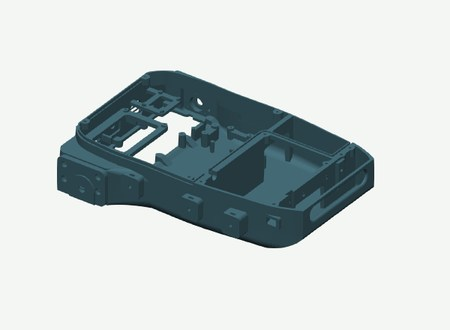
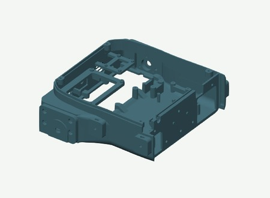
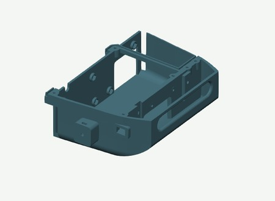
Print the outer frames separately on the front-right to rear-left diagonal. The STLs are already rotated. Placement guide.

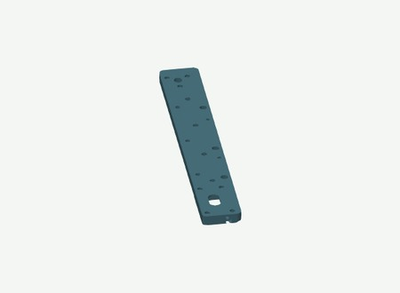
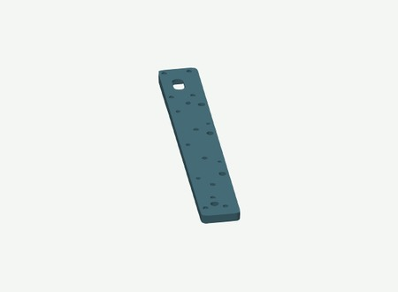
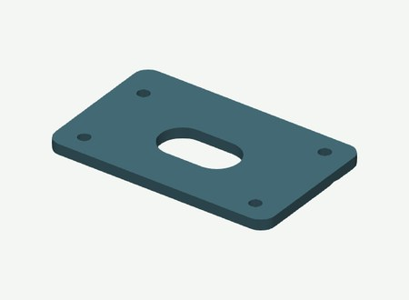
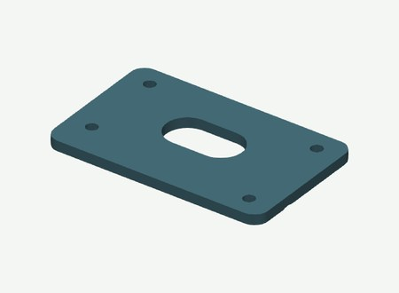
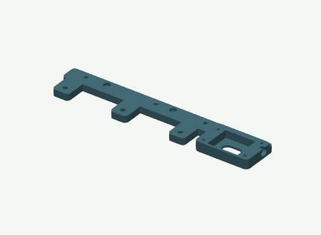
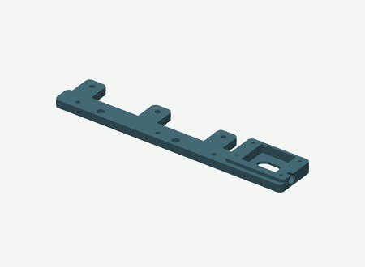
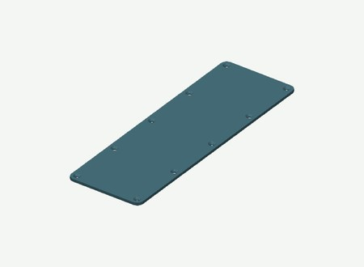
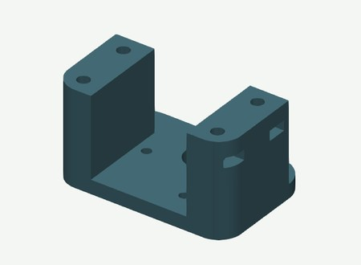
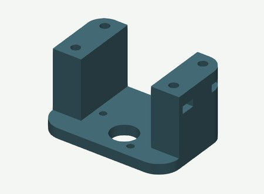
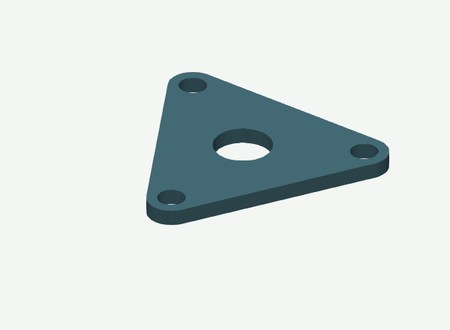
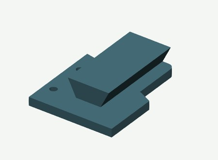
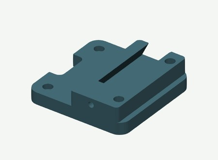
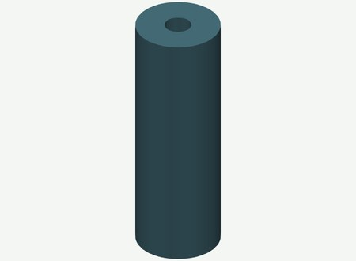
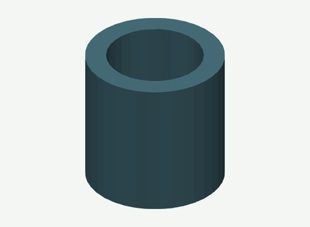
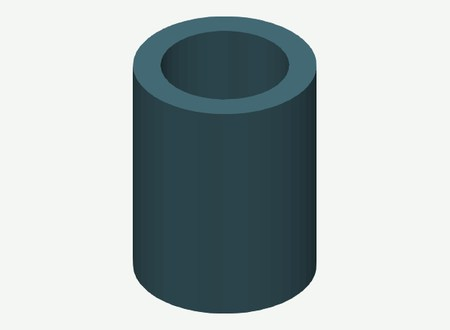
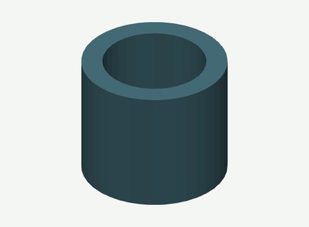
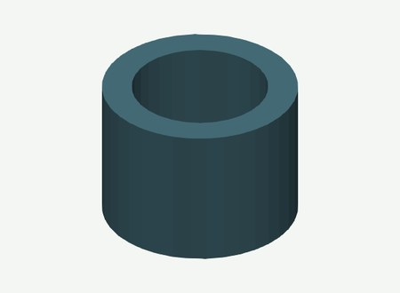
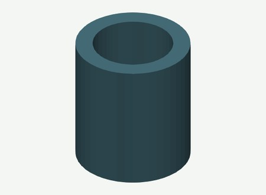
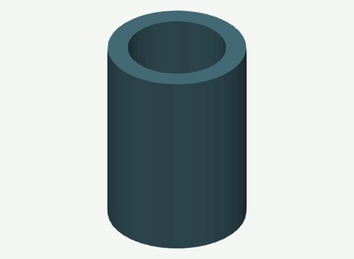
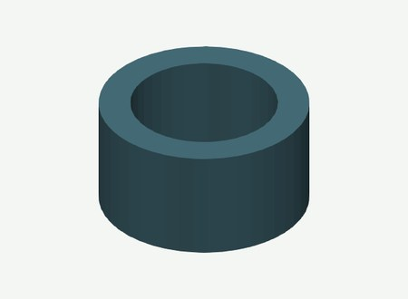
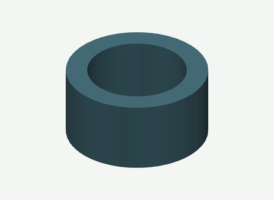
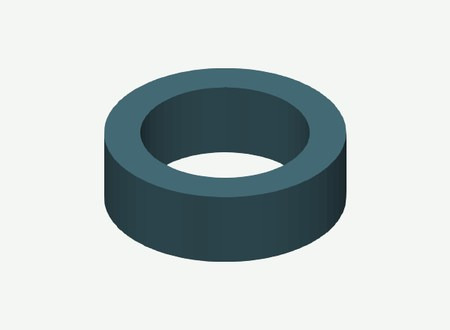
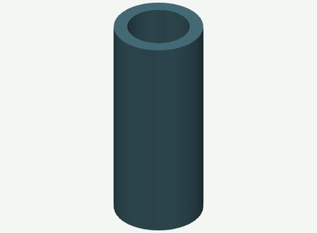
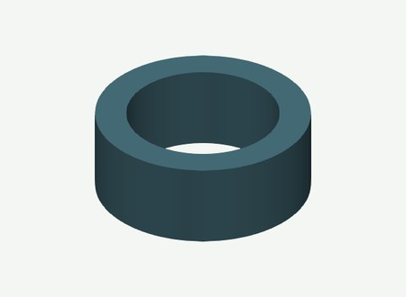
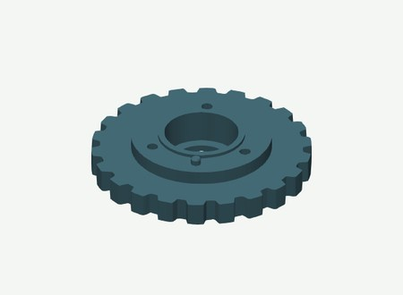
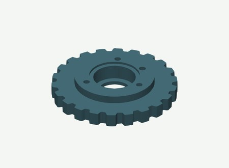
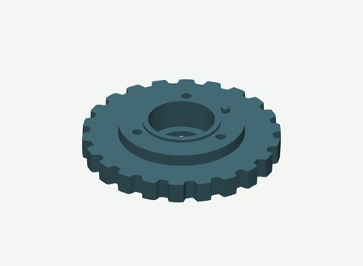
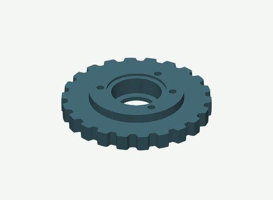
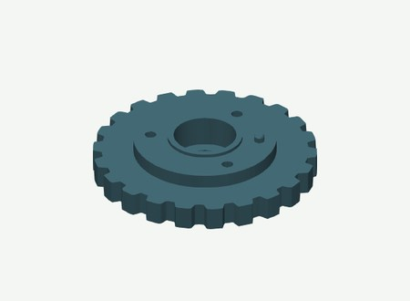
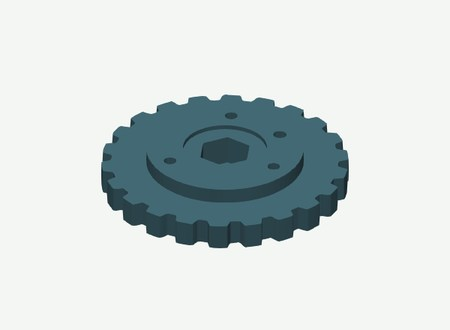
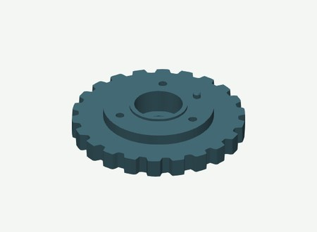
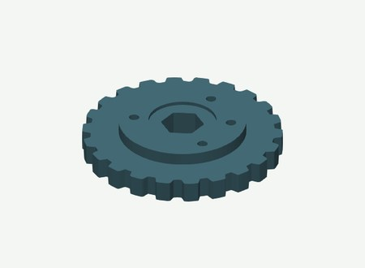
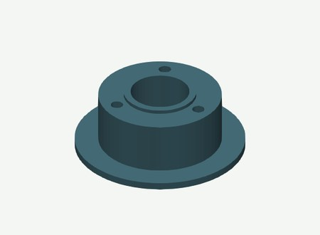
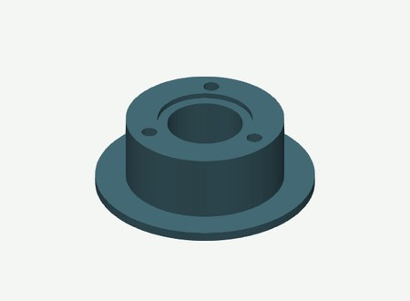
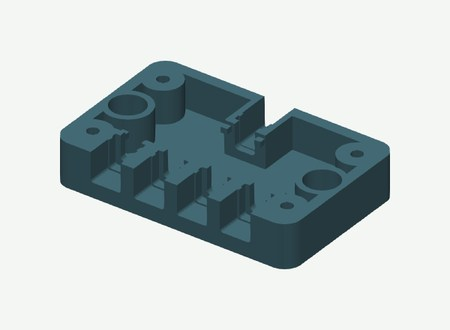
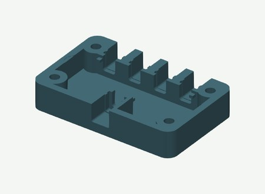
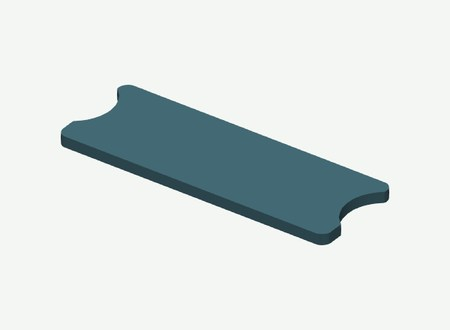
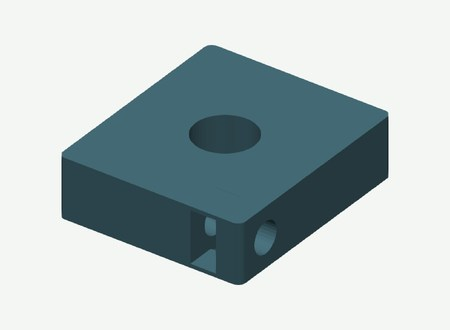
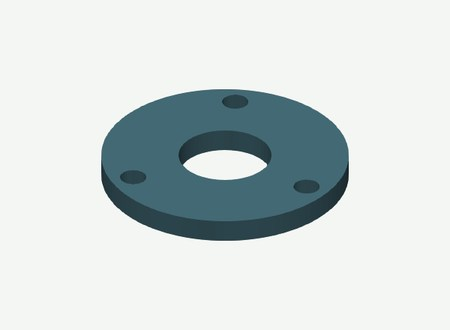
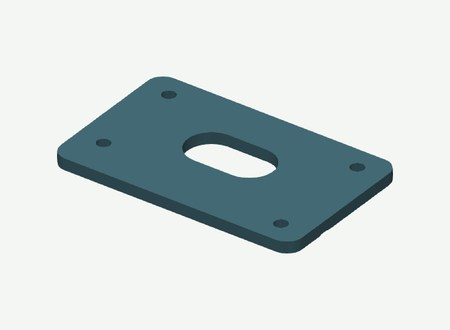
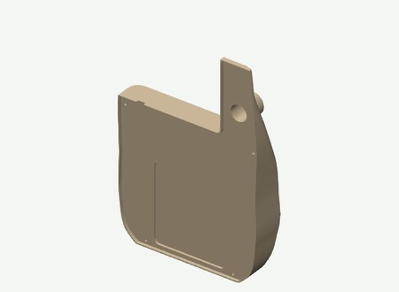
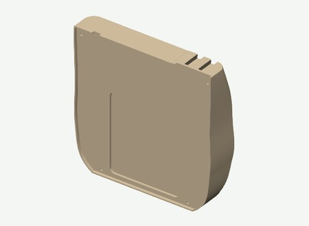
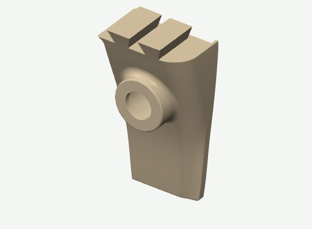
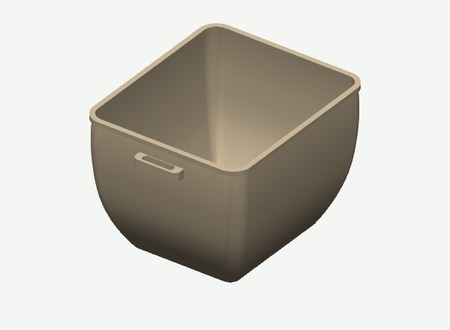
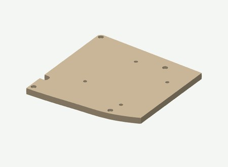
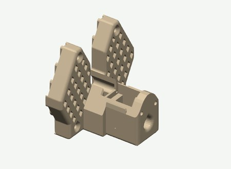
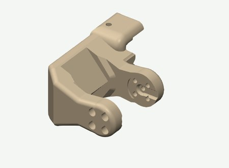
Parts and hardware for one rover using separate modules. Choose one computer and one camera option.
One rover, using separate off-the-shelf modules. Choose one computer and one depth camera.
| Item | Quantity | Note |
| Adafruit QT Py ESP32-S3, 8 MB flash, no PSRAM, ref.5426 | 1 | |
| Adafruit Terminal Block BFF, ref.6495 | 1 | |
| Adafruit INA219 STEMMA QT, ref.904 | 1 | |
| STEMMA QT cable, 300 mm, ref.5384 | 1 | |
| Cytron MDD10A Rev2 dual motor driver | 1 | |
| Waveshare Bus Servo Adapter A | 1 | |
| MAX98357A amplifier module | 1 | |
| Speaker, 3 W, 4 ohm | 1 | |
| Acoustic splash membrane and compatible adhesive | 1 | EPTFE or non woven fabric membrane. |
| Item | Quantity | Note |
| JGB37-520, 12 V, 90:1, 110 rpm, Hall encoder, 6 mm D-shaft | 2 | |
| 625 bearing | 12 | |
| 608 bearing | 4 | |
| 626 bearing | 4 | |
| LK05 — shaft collar, 5 mm bore, Ø10 × 5 mm | 12 | |
| LK06 — shaft collar, 6 mm bore, Ø11 × 5 mm | 2 | |
| LK08 — shaft collar, 8 mm bore, Ø16 × 8 mm | 4 | |
| Smooth steel axle, 5 ×70 mm finished length | 6 | Check the physical stack before cutting stock. |
| Smooth steel axle, 6 ×77 mm finished length | 2 | |
| Smooth steel axle, 8 ×87 mm finished length | 2 | |
| Rigid motor-to-shaft coupling, 6 mm bores | 2 | |
| HEX12 metal wheel hub, 6 mm bore, 18 mm length | 2 |
LK05/LK06/LK08 are guide identifiers for purchased shaft collars, also called lock rings. All spacer and collar references.
| Item | Quantity | Note |
| ST3215 12 V serial bus servo | 5 | Keep the original servo screw packs. |
| CF35-12 constant-force gripper servo | 1 | |
| 3010 fan, 12 V | 2 | |
| Magnet, 20 ×10 ×2 mm | 4 | Glue into the pockets with epoxy; check polarity before gluing. |
| Small two-part epoxy adhesive kit, two tubes (resin + hardener) | 1 kit | For gluing the four bin magnets and joining the two-piece hull and cover when printing on a smaller printer. |
| M3 brass heat-set insert, OD4 mm, length 6 mm | 11 | 10 in the hull and 1 in the LiDAR base. |
| Item | Quantity | Note |
| 12-cell battery pack, 3S4P, with BMS | 1 | 110 × 67 × 35 mm. |
| 12.6 V CC/CV charger for the selected 3S pack | 1 | |
| Emergency stop LA16-11ZS/A, 16 mm | 1 | |
| KCD11 two-pin rocker switch and splash cover | 1 | |
| Inline blade-fuse holder, 14 AWG | 1 | |
| ATC blade fuse, 15 A | 1 | |
| Amass XT30 male/female connector pair | 6 | |
| DC panel socket, 5.5 ×2.1 mm | 2 | Female panel-mount sockets. |
| DC male barrel plug — computer power branch | 1 | Jetson: 5.5 × 2.5 mm, 9.5 mm barrel, centre positive (NVIDIA specification). Pi option: choose the plug that matches the input of the selected 5 V power supply. These are alternatives. |
| DC male barrel plug, 5.5 × 2.1 mm — servo power branch | 1 | For the Waveshare Bus Servo Adapter A (Waveshare specification). |
| DC male barrel plug, 5.5 × 2.1 mm — battery extension | 1 | Matches the 5.5 × 2.1 mm panel socket listed above. |
| Wire, ferrules and heat-shrink | 1 lot | |
| Hoco HB1 four-port USB 2.0 hub | 1 | |
| GameSir Nova 2 Lite gamepad with wireless USB receiver | 1 | For manual driving; include the wireless USB receiver. Used successfully on MOSS. |
| USB-C to USB-A cable, 30 cm | 3 | |
| RealSense camera cable | 1 | Lazada product link · RealSense option only. |
| Item | Quantity | Note |
| NVIDIA Jetson Orin Nano Super Developer Kit | 1 | Use the Jetson carrier. |
| OR Raspberry Pi5 with its cooler, storage and appropriate 5 V supply | 1 | Use the Pi carrier and the mounting screws and spacers supplied with the HAT. |
| Item | Quantity | Note |
| Intel RealSense D455 OR Orbbec Gemini 2 | 1 | Use the matching printed insert(s); these are alternatives. |
| SLAMTEC RPLIDAR C1 | 1 | |
| Wrist USB camera for the R30 mount | 1 | PCB mounting-hole pattern: 21 × 13.5 mm. |
Quantities are for one rover. Use the assembly step to locate each fastener.
| Assembly | Fasteners for one rover |
| Choose the hull and fit the inserts | 11 × M3 heat-set insert, OD4 mm, length 6 mm; 6 × Split hull only: M4 × 15 socket-head screw; 6 × Split hull only: M4 hex nut, 7 mm across flats; 6 × Split hull only: M4 washer, Ø9 × 0.8 mm |
| Build the six road wheels | 18 × M3 × 35 socket-head screw; 18 × M3 hex nut |
| Build the two drive wheels | 6 × M3 × 20 socket-head screw; 6 × M3 hex nut |
| Build the two idler wheels | 6 × M3 × 25 socket-head screw; 6 × M3 hex nut |
| Fit the motors and inner bearing retainers | 8 × M4 × 20 socket-head screw; 8 × M4 hex nut; 12 × M3 × 8 socket-head screw |
| Fit the inner track frames | 6 × M4 × 15 socket-head screw; 6 × M4 hex nut |
| Fit the drive axles and outer bearing covers | 6 × M3 × 15 socket-head screw; 6 × M3 hex nut |
| Fit the idler slides and tensioners | 16 × M3 × 15 socket-head screw; 16 × M3 hex nut; 4 × M4 × 35 socket-head screw; 8 × M4 hex nut; 4 × M4 washer |
| Close the track frames | 4 × M4 × 60 socket-head screw; 4 × M4 hex nut; 4 × M4 washer |
| Fit the driver and controller | 4 × M3 × 6 socket-head screw; 6 × M2 × 6 screw, non-countersunk; 6 × M2 washer, 0.3 mm thick |
| Fit the speaker and amplifier | 2 × M3 × 6 socket-head screw; 2 × M2 × 6 screw, non-countersunk; 2 × M2 washer, 0.5 mm thick |
| Fit the computer carrier and servo adapter | 2 × M3 × 6 socket-head screw; 2 × M3 × 8 socket-head screw; 4 × M3 washer, 0.5 mm thick; 4 × M2.5 × 8 screw, non-countersunk; 4 × M2.5 washer, 0.5 mm thick; 2 × Jetson only: M3 × 8 socket-head screw, no washer |
| Fit the camera option | 2 × RealSense only: M4 × 10 socket-head screw; 2 × Gemini only: M3 × 8 socket-head screw |
| Fit the LiDAR carriage | 2 × M3 × 10 socket-head screw; 4 × M2.5 × 6 socket-head screw; 1 × M3 × 20 socket-head screw |
| Fit power distribution and cooling | 4 × M2.5 × 10 low-head screw, head diameter 5 mm maximum |
| Fit the arm plate and build the arm | 4 × M3 × 10 socket-head screw; 4 × M4 × 25 countersunk 90-degree screw; 4 × M4 hex nut; 20 × Kit screw: M2 × 6, original servo head; 37 × Kit screw: M3 × 6, original servo head |
| Build the gripper and wrist camera | 11 × Kit screw: M3 × 6 cross-head ISO7045; 6 × Kit screw: #1-42 x3/16 inch typeAB; 4 × M2 × 6 screw, non-countersunk, for wrist camera PCB; 2 × M3 × 10 socket-head screw, for wrist camera bracket; 2 × M3 hex nut, for wrist camera bracket |
| Close the hull and fit the bin | 10 × M3 × 10 countersunk 90-degree screw, head diameter 6.4 mm maximum; 4 × M3 × 10 countersunk 90-degree screw, head diameter 5.6 mm maximum |
Screw lengths are measured under the head, except countersunk screws, which use their full length. Retain the original heads supplied with the servo and gripper kits. Camera screw sets are alternatives.
Measured fastener lengths. Pi/HAT mounting hardware is supplied with the HAT; no separate screw purchase is added.
The supplied computer carriers are for the NVIDIA Jetson Orin Nano and Raspberry Pi 5. Choose one carrier and one camera option.
See the assembly cards.
Use the same two-part epoxy kit listed above. Retain the six M4 hull fixings and the four cover mounting screws.
The main Fusion and STEP files cover the one-piece set. The two-piece hull and upper cover have their own native Fusion assemblies. Arm meshes and track masters are also supplied as STL.
The 24 October package includes 73 distinct part STLs, two optional fit coupons, both Jetson tabs, and the H2S and P1 / P2 3MF projects. Shared parts have one file and a total print quantity.